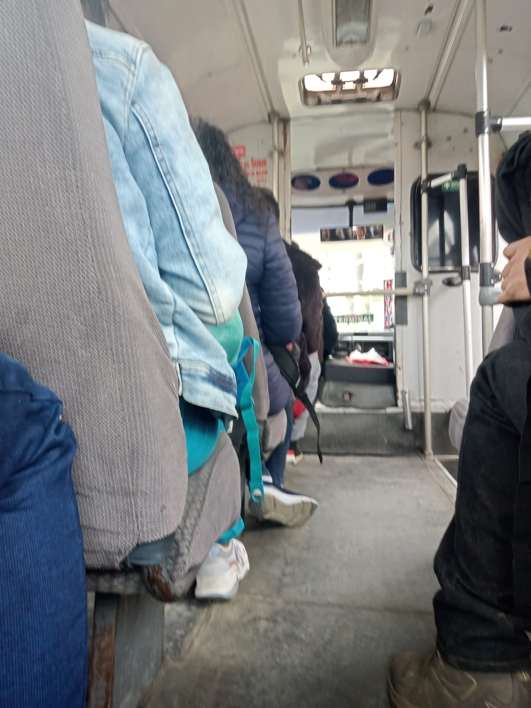

    <!-- ======= About Section ======= -->
    <section id="about" class="about">
        <div class="container" data-aos="fade-up">
  
          <div class="row">
            <div class="col-lg-6 order-1 order-lg-2" data-aos="fade-left" data-aos-delay="100">
              
            </div>
            <div class="col-lg-6 pt-4 pt-lg-0 order-2 order-lg-1 content" data-aos="fade-right" data-aos-delay="100">
              <h3>OBSERVATORIO DE MOVILIDAD Y ACCESIBILIDAD DE TUNJA</h3>
  
              <b>
                <h3 style="color:rgba(244, 196, 8, 0.927)">Misión</h3>
              </b>
              <p class="">
                Proporcionar y difundir información objetiva y actualizada sobre la movilidad urbana y rural con la
                precisión y análisis debido para apoyar la toma de decisiones informadas y con ello contribuir a la
                formulación de políticas y estrategias sostenibles de movilidad a corto, mediano y largo plazo orientado a
                mejorar la calidad de vida de las personas a través de un tránsito y un transporte sostenible y seguro.
              </p>
              <b>
                <h3 style="color:rgba(244, 196, 8, 0.927)">Visión</h3>
              </b>
              <p class="">
                Ser un centro líder, referente nacional e internacional en la difusión y seguimiento de información fiable
                actualizada de la movilidad urbana y rural de la ciudad de Tunja, contribuyendo, en la actualidad y en un
                futuro, a que las personas pueden moverse de forma segura, eficiente y sostenible, y así apoyar la
                planificación, gestión y operación del tránsito , el transporte y la infraestructura vial de la ciudad de
                Tunja.
              </p>
              <b>
                <h3 style="color:rgba(244, 196, 8, 0.927)">Objetivo general</h3>
              </b>
              <p class="">
                Presentar y difundir datos de tránsito, transporte e infraestructura vial como información para transmitir
                y generar conocimiento orientado a mejorar la movilidad y accesibilidad en la ciudad de Tunja. a través de
                la recopilación, análisis y difusión de información precisa y relevante sobre la movilidad y los patrones
                de transporte.
              </p>
  
              <b>
                <h3 style="color:rgba(244, 196, 8, 0.927)">Objetivos especificos</h3>
              </b>
              <ul>
                <li><i class="ri-check-double-line"></i> Realizar la recopilación, análisis y difusión de información
                  precisa y relevante sobre la movilidad, la accesibilidad junto con los patrones de transporte.</li>
                <li><i class="ri-check-double-line"></i> Monitorear y hacer seguimiento a las tendencias del tránsito, los
                  patrones de uso del transporte y la infraestructura vial encarados en la movilidad de la ciudad de
                  Tunja.</li>
                <li><i class="ri-check-double-line"></i> Fomentar la colaboración y el intercambio de información entre
                  los actores relevantes, como las autoridades, los proveedores de servicios de transporte y la comunidad.
                  Así mismo en conjunto Identificar y priorizar las necesidades y desafíos relacionados con la movilidad
                  en la ciudad.</li>
                <li><i class="ri-check-double-line"></i> Proporcionar a los responsables de la planificación (urbana y
                  rural, y del transporte información valiosa para la toma de decisiones en los proyectos relacionados con
                  la movilidad, y empoderar a los ciudadanos para tomar decisiones conscientes sobre su forma de
                  movilizarse y con ello contribuir a la formulación de políticas y estrategias sostenibles de movilidad a
                  corto, mediano y largo plazo.</li>
              </ul>
            </div>
          </div>
  
        </div>
      </section><!-- End About Section -->